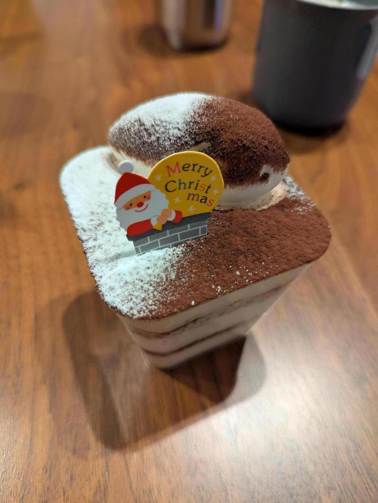

<- 日記
ゴルフ場の練習場に行って練習してきた。アプローチを主に練習したんだが、転がすアプローチがだいぶうまくなった。 56度で転がそうとするとトップしたり、玉が浮いてしまってショートしたりが多いのだが、フェースを閉じて構えてそのまま閉じて打つとほぼそのミスがなくなった。その分左にスピンするのだが、そこは打ち出しの方向で調整できる。家に帰って調べたら割とあるやり方なようだった。

昨日のバスクチーズケーキと同じ店で買ってきたティラミス食べた。これもめちゃくちゃうめー。